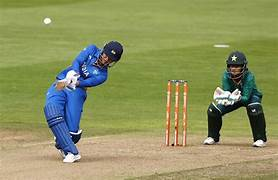

We at ADM Sports Academy, we focus on student’s growth from his/her basics. Those who are new to sports, we prepare from the very basic fundamental and fitness skills along with the sports related skills. We intend to increase their passion and discipline by providing sports counselling and making them strong physically and mentally. For the players who have already achieved a benchmark in their sport, we have organized and structured methods to enhance their skill set in the same field. Fundamental, fitness and sports related skills are structured in the lesson plans by keeping the age groups and their performance levels in consideration. A player’s success depends not only upon the practice and performance he/she carries, but it also depends upon the sports environment, and we provide the best at our level and availability. Know More. We at ADM Sports Academy, we focus on student’s growth from his/her basics. Those who are new to sports, we prepare from the very basic fundamental and fitness skills along with the sports related skills. We intend to increase their passion and discipline by providing sports counselling and making them strong physically and mentally. For the players who have already achieved a benchmark in their sport, we have organized and structured methods to enhance their skill set in the same field. Fundamental, fitness and sports related skills are structured in the lesson plans by keeping the age groups and their performance levels in consideration. A player’s success depends not only upon the practice and performance he/she carries, but it also depends upon the sports environment, and we provide the best at our level and availability. Know More. We at ADM Sports Academy, we focus on student’s growth from his/her basics. Those who are new to sports, we prepare from the very basic fundamental and fitness skills along with the sports related skills. We intend to increase their passion and discipline by providing sports counselling and making them strong physically and mentally. For the players who have already achieved a benchmark in their sport, we have organized and structured methods to enhance their skill set in the same field. Fundamental, fitness and sports related skills are structured in the lesson plans by keeping the age groups and their performance levels in consideration. A player’s success depends not only upon the practice and performance he/she carries, but it also depends upon the sports environment, and we provide the best at our level and availability. Know More.